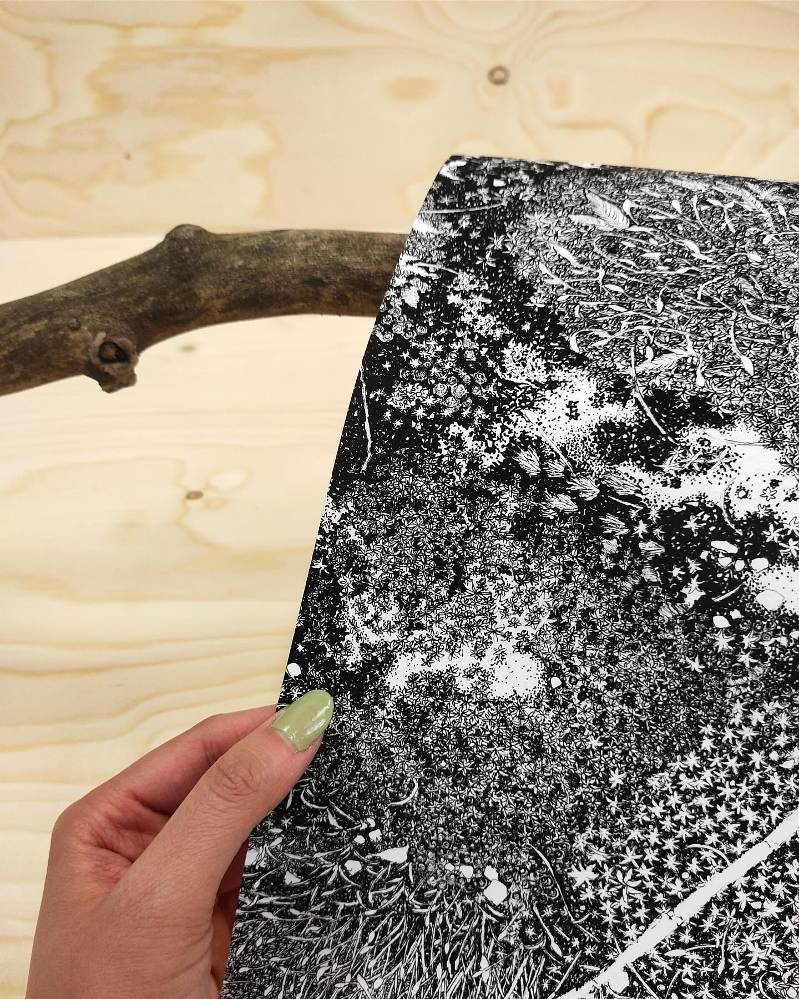
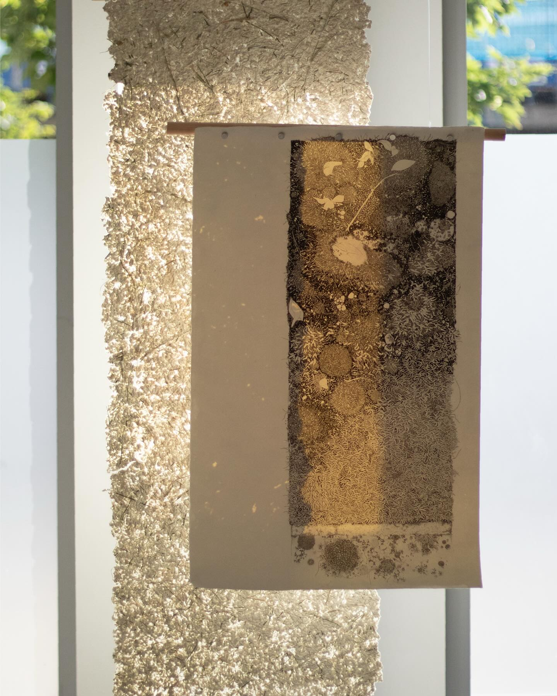

2025 · Drawing · KaalChakra, London Design Festival 2025
Whispers on Bricks

The whole subject is the top of two bricks, laid side by side on one boundary wall, and the mosses sitting on them.
this drawing is a result of deep seeing, it shows mosses sitting on top of two adjacently laid bricks on a boundary wall. Immerse yourself in the details and listen to their story!
The drawing runs across both bricks and the joint between them. On one side is a mat of feathery moss. In the middle is the pale joint, put down in dots. On the other side is bare brick with single cushions and small flowers.
Whispers on Brick, drawn over six months of patient observation, this work traces the quiet resilience of moss resting on a boundary wall. Moss, among the most ancient of plants, lives through cycles of rain and drought, presence and absence, soft decay and renewal.
Each mark of the pen becomes an invitation to pause, lean closer, and enter the turning of seasons that sustains all life.
- Exhibition
- KaalChakra, a group exhibition
- By
- OSA studio
- Part of
- London Design Festival 2025, as an official partner
- Curated by
- Daksh Goel and Oishi Roy Dutta
- Venue
- Asylum Chapel, Caroline Gardens, Asylum Rd, London SE15 2SQ
- Dates
- 14 and 15 September 2025
- The exhibition’s question
- “What if time doesn’t move forward, but turns?”
The exhibition poster prints the title as Whispers on Brick. Her own card reads Whispers on Bricks.



